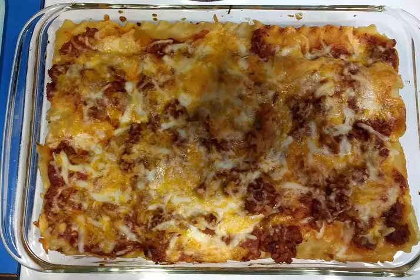

Lasagna

Description
This is a recipe for lasagna. I hope for your sake that the picture is deceiving, as it doesn't look like any lasagna I would like to eat.
Good luck with this recipe, and may the odds be ever in your favor
Ingredients
- 1 (16 ounce) package lasagna noodles
- 1 lb lean ground beef
- Salt and pepper to taste
- 1 (16 oz) jar spaghetti sauce
- 1 clove garlic, minced
- 1/2 lb shredded mozzarella cheese
- 1/2 lb shredded cheddar cheese
- 1 pint ricotta cheese
Cooking Instructions
- Bring a large pot of lightly salted water to a boil. Add pasta and cook for 8 to 10 minutes or until al dente; drain.
- Preheat oven to 350 degrees F (175 degrees C). In a large skillet over medium-high heat, brown beef and season with salt and pepper; drain. Stir in spaghetti sauce and garlic and simmer 5 minutes.
- In a medium bowl, combine mozzarella, Cheddar and ricotta; stir well. In 9x13 inch pan, alternate layers of noodles, meat mixture and cheese mixture until pan is filled.
- Bake in preheated oven for 30 minutes, or until cheese is melted and bubbly.